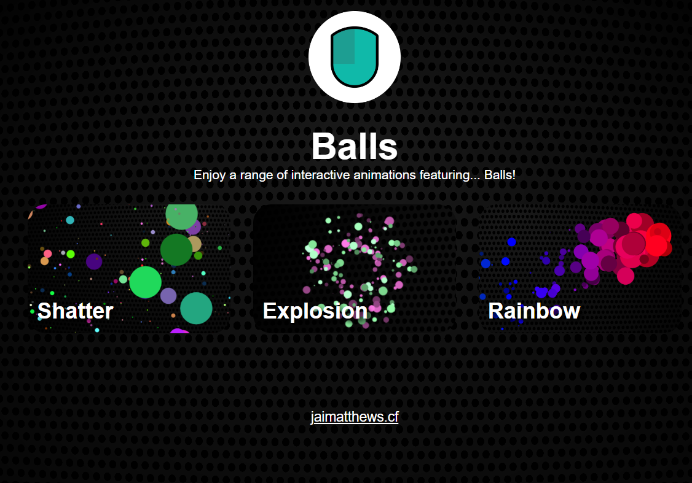
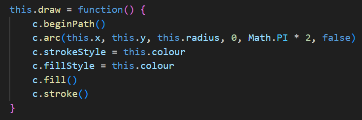
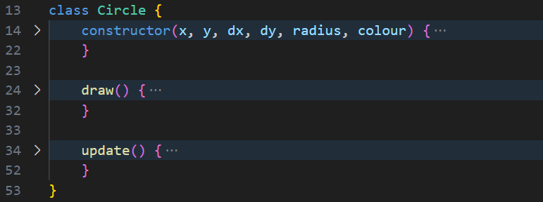
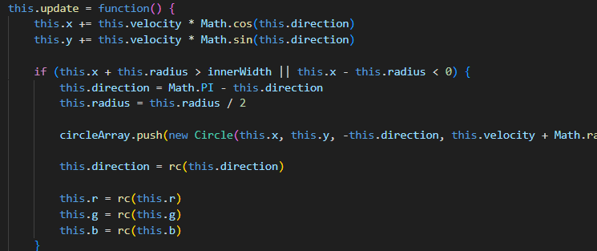
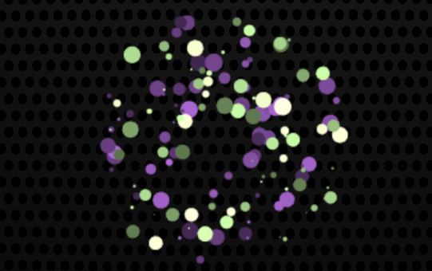

'Balls' is an interactive animation named after the colourful balls that appear within it. It was created as a quick week-long project whilst I learnt how to use the HTML Canvas element and animate things on it using JavaScript.
To begin with, I learnt how the HTML Canvas actually works. I learnt that the canvas is a bitmap image with defined dimensions. I could draw things onto the canvas such as lines, rectangles, circles (called arcs), and images. For the purpose of this project, I chose to exclusively draw coloured circles. Code is required to begin the arc & end it etc. and also to declare colour, position, whether it's filled in, and how much of the circle is shown.
To keep track of the balls, I would use classes (or, in some cases, constructor functions) to define every ball's movement. Then I could create a new instance of this class whenever I wished and could add it to an array to keep track of it. A this.update() function would allow me to change the position of each ball by looping through every ball within the array.
With this base code, I changed the specifics of this.update() for each animation. For instance, in the first animation - shatter - this.update() included code to move in a constant direction and bounce when it hits the walls.
When the ball hits the wall it breaks into two smaller ones and continues the shatter every time it hits another wall. Another animation I created is 'Explosion', which uses gravity to create a firework-esque effect with sets of complementary colours. The third and final animation, 'Rainbow', features many small rainbow balls that grow with proximity to the mouse cursor.
Each animation also features a more intense mode toggleable using a button in the top left to make it extra-interesting.
Balls is available to play with from your web browser on any device. Click here is access it.